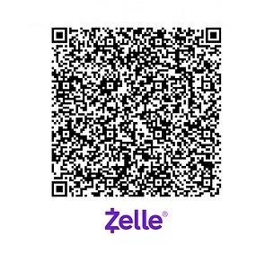

Cómo ofrendar
Donar por Zelle
IBRD utiliza Zelle como plataforma principal para recibir donaciones.
Les pedimos amablemente que cancelen cualquier pago recurrente configurado en Kindrid y realicen sus contribuciones a través de Zelle, usando el correo:
cuentas.ibrdnj@gmail.com
O escanea el código QR con tu teléfono.

"Cada uno dé como propuso en su corazón: no con tristeza, ni por necesidad, porque Dios ama al dador alegre."2 Corintios 9:7
Preguntas frecuentes
Sobre Zelle
¿Qué es Zelle?
Zelle es una forma de enviar dinero directamente entre cuentas bancarias en EE. UU., típicamente en minutos, con solo un correo o número de teléfono.
¿Hay tarifas?
Zelle no cobra tarifas por enviar o recibir dinero. Confirma con tu banco si aplica algún cargo adicional.
¿Es seguro?
Zelle utiliza funciones de autenticación y monitoreo para proteger tus pagos, ya sea desde su app o desde la banca en línea de tu banco.
¿Sin smartphone?
Si tu banco ofrece Zelle, puedes usarlo desde su sitio web de banca en línea sin necesidad de un teléfono inteligente.